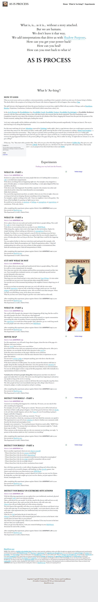

As Is Process on Strikingly
-
What is, is... as it is... without a story attached.
But we are humans.
We don't leave it that way.
We add interpretations that drive us with Shadow Purposes.
How can you get your power back?
How can you heal?
How can you reset back to what is?
AS IS PROCESS
-
What Is 'As-Ising'?
HOW IT GOES
When an event occurs such as an accident, a miscommunication, something is lost or gained, a shock can enter any of a human being's 5 Bodies. The shock-effect is the symptom of not being in the Present with whatever happened or did not happen, thus creating a Gap.
The split between what happened and where the person functions in current time, might be filled with any number of things, such as Emotions, Stories, Projections, Conclusions, Confusion, Self-Doubt (which comes from a story), etc.
In the As Is Process the Possibilitator (e.g. Possibility Coach, Possibility Trainer, Possibility Psychologist, or Possibility Mediator) connects with the Client and makes a leap in time with them back to the moment that the shock originated. Then the Possibilitator uses Completion Loops for every step of the evolution of events for all 5 Bodies of the Client, dragging the Present from the past into the present of the Present moment, making them whole again, healing the wound.
'As Is-ing' works equally well for children and adults. It is a standard healing tool that proceeds magnificently. We hope you learn it. The way to start learning it is by doing this Experiment.
For this next week keep 3% of your Attention reserved for Noticing 'reality splits', that is, a gap between where you would expect a person to be and where they seem to be. The instant you find a 'reality split', gently interrupt the flow of the conversation by making a Meta Conversation - a conversation about the conversation - "May I ask you a question about something I just noticed? (Yes.) It looks like there is a 'reality split' between something that happened to you and who you are right now. If you would let me, I would accompany you on a journey starting at the moment the gap happened back here to the present, filling in the gaps along the way. This is called 'As-Ising'. It might take ten minutes or so. Are you willing?"
If they say, "Yes," then start with a question like, "How old were you when this thing happened?" Use whatever Golden Key they give you, and make a Completion Loop with each-and-every 5 Body sharing they give you. Ask them to be clear and specific with names, dates, what exactly happened - and their 4 Feelings about it - as you progress from there back then to here and NOW.